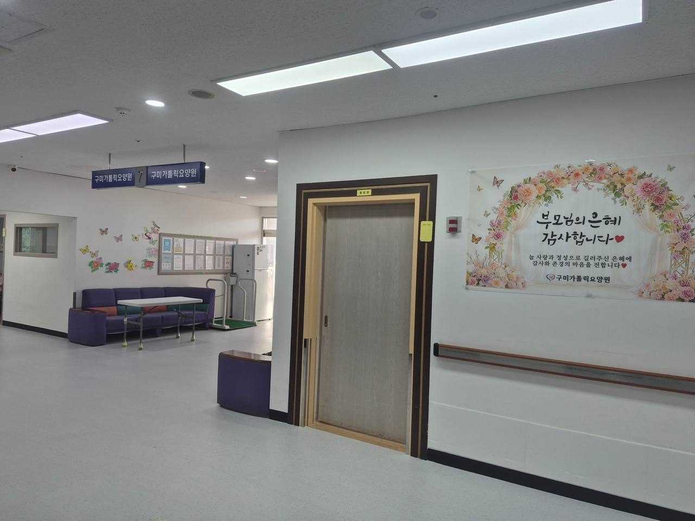
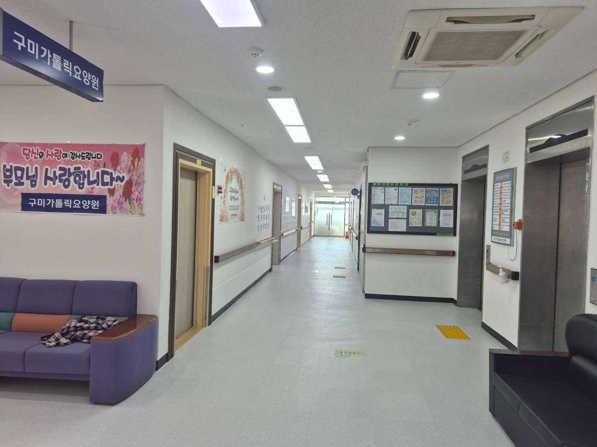
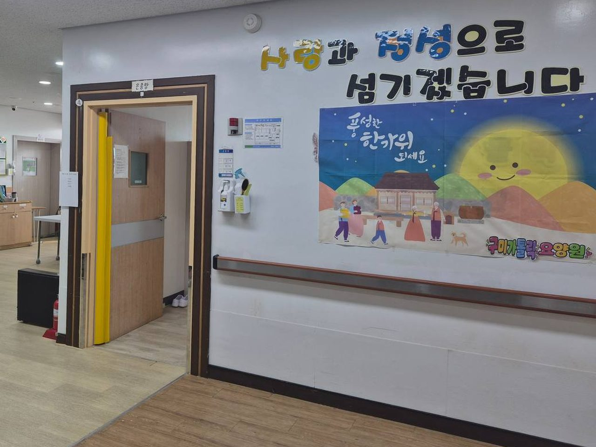
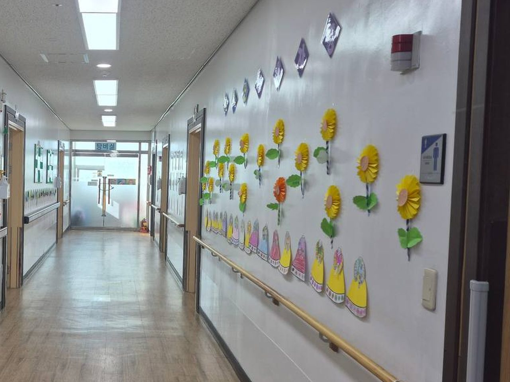
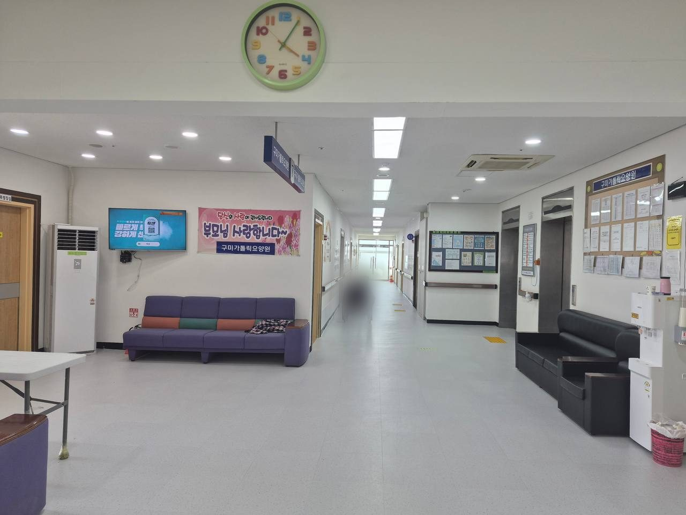
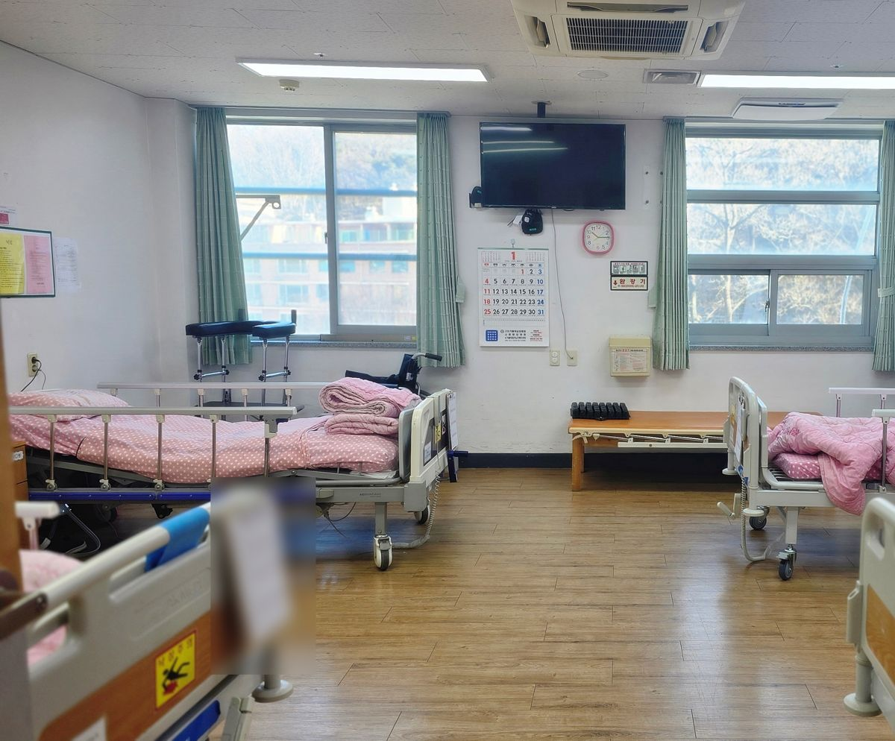
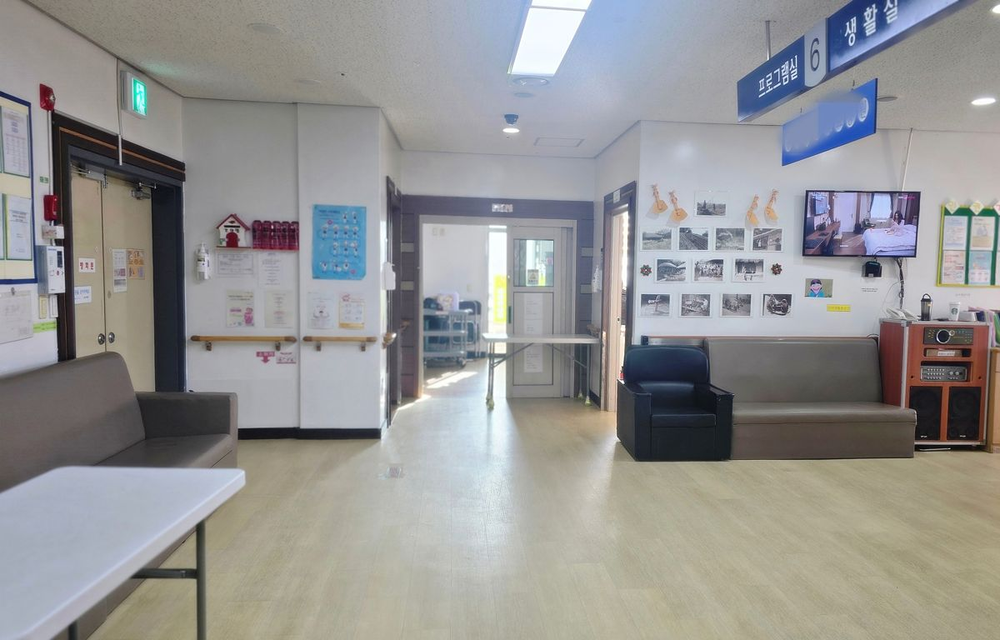
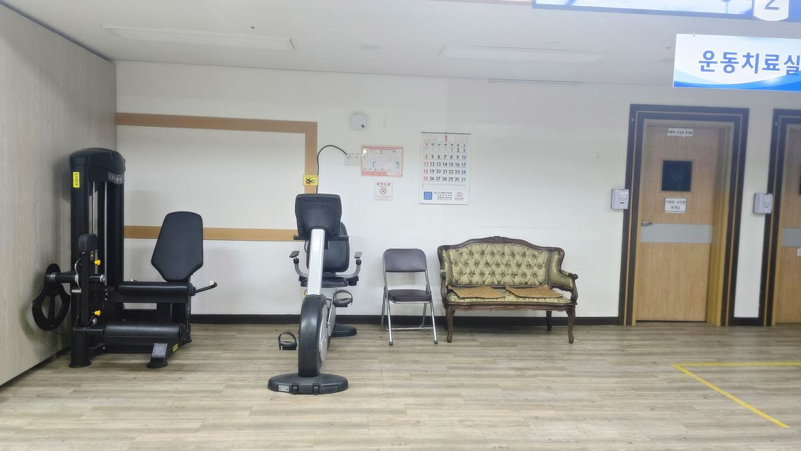

일상생활 돌봄
식사와 이동, 위생 등 어르신에게 필요한 일상생활을 곁에서 돕습니다. 필요한 도움의 정도는 입소 상담에서 함께 확인합니다.
365일 24시간 상담 신청신청하시면 24시간 안에 연락드립니다





A등급
2025 정기평가 92점 (평균 85점)
64명
노인요양시설
구미가톨릭
요양병원
생활 안내
국민건강보험공단 2025년 장기요양기관 정기평가에서 A등급(최우수), 총점 92점(전체 평균 85점)을 받았습니다.
식사와 이동, 위생 등 어르신에게 필요한 일상생활을 곁에서 돕습니다. 필요한 도움의 정도는 입소 상담에서 함께 확인합니다.
인지활동과 노래교실 같은 여가 프로그램, 생신잔치와 이미용 서비스를 정기적으로 운영합니다. 물리치료실에서 물리치료사가 신체 활동을 돕습니다.
매주 식단표와 프로그램 소식을 기관 블로그에 올려 가족이 어르신의 생활을 함께 볼 수 있게 합니다. 면회 방법은 상담 시 안내합니다.
요양원 둘러보기
생활실과 공용 거실, 운동치료실의 실제 모습입니다.



입소 안내
장기요양등급이 아직 없거나 확인이 필요해도 먼저 전화로 문의해 주세요.
어르신의 상태와 희망 입소 시기를 말씀해 주세요.
장기요양등급과 입소 전 건강검진진단서(30일 이내) 등 필요한 서류를 안내합니다.
생활 공간을 둘러보고 비용 구성을 확인합니다.
입소 일정과 준비물을 확인합니다.
비용 안내
비용은 장기요양등급과 본인부담 감경 여부, 이용 항목에 따라 달라집니다. 상담 시 아래 항목을 나누어 안내합니다.
자주 묻는 질문
네. 등급 신청이 필요한지, 어떤 절차로 진행되는지 상담 시 함께 안내합니다.
어르신의 상태와 등급, 입소 가능 여부를 확인해야 합니다. 희망 시기를 전화로 알려 주세요.
방문 일정은 전화로 먼저 정해 주세요. 생활 공간과 이용 방법을 안내합니다.
요양병원은 의료기관으로 입원 치료를 하고, 요양원은 장기요양 인정을 받은 어르신이 생활하며 돌봄을 받는 시설입니다. 어르신의 상태에 맞는 곳을 상담해 드립니다.
전화 상담 · 평일 오전 9시 – 오후 6시
주말·공휴일은 원클릭 상담 신청을 이용해 주세요
어르신의 상태와 필요한 돌봄을 확인해 안내합니다.
요양원 소식 보기 ↗병원 입원과 재가 서비스는 요양원 입소와 구분하여 상담합니다.
입원 치료와 투석
집으로 찾아가는 돌봄